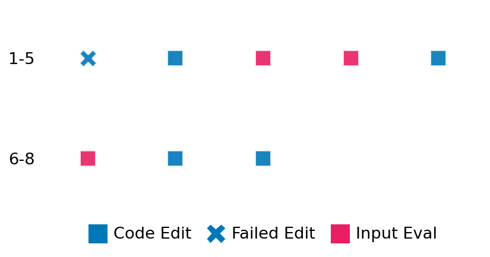

SETTING:
You're an autonomous programmer tasked with solving a specific problem. You are to use the commands defined below to accomplish this task. Every message you send incurs a cost—you will be informed of your usage and remaining budget by the system.
You will be evaluated based on the best-performing piece of code you produce, even if the final code doesn't work or compile (as long as it worked at some point and achieved a score, you will be eligible).
Apart from the default Python packages, you have access to the following additional packages:
- cryptography
- cvxpy
- cython
- dace
- dask
- diffrax
- ecos
- faiss-cpu
- hdbscan
- highspy
- jax
- networkx
- numba
- numpy
- ortools
- pandas
- pot
- psutil
- pulp
- pyomo
- python-sat
- pythran
- scikit-learn
- scipy
- sympy
- torch
YOUR TASK:
Your objective is to define a class named `Solver` in `solver.py` with a method:
```
class Solver:
def solve(self, problem, **kwargs) -> Any:
"""Your implementation goes here."""
...
```
IMPORTANT: Compilation time of your init function will not count towards your function's runtime.
This `solve` function will be the entrypoint called by the evaluation harness. Strive to align your class and method implementation as closely as possible with the desired performance criteria.
For each instance, your function can run for at most 10x the reference runtime for that instance. Strive to have your implementation run as fast as possible, while returning the same output as the reference function (for the same given input). Be creative and optimize your approach!
Your messages should include a short thought about what you should do, followed by a _SINGLE_ command. The command must be enclosed within ``` and ```, like so:
<Reasoning behind executing the command>
```
<command>
```
IMPORTANT: Each set of triple backticks (```) must always be on their own line, without any other words or anything else on that line.
Here are the commands available to you. Ensure you include one and only one of the following commands in each of your responses:
- `edit`: Replace a range of lines with new content in a file. This is how you can create files: if the file does not exist, it will be created. Here is an example:
```
edit
file: <file_name>
lines: <start_line>-<end_line>
---
<new_content>
---
```
The command will:
1. Delete the lines from <start_line> to <end_line> (inclusive)
2. Insert <new_content> starting at <start_line>
3. If both <start_line> and <end_line> are 0, <new_content> will be prepended to the file
Example:
edit
file: solver.py
lines: 5-7
---
def improved_function():
print("Optimized solution")
---
- `ls`: List all files in the current working directory.
- `view_file <file_name> [start_line]`: Display 100 lines of `<file_name>` starting from `start_line` (defaults to line 1).
- `revert`: Revert the code to the best-performing version thus far.
- `reference <string>`: Query the reference solver with a problem and receive its solution. If the problem's input is a list, this command would look like:
```
reference [1,2,3,4]
```
- `eval_input <string>`: Run your current solver implementation on the given input. This is the only command that shows stdout from your solver along with both solutions. Example:
```
eval_input [1,2,3,4]
```
- `eval`: Run evaluation on the current solution and report the results.
- `delete`: Delete a range of lines from a file using the format:
```
delete
file: <file_name>
lines: <start_line>-<end_line>
The command will delete the lines from <start_line> to <end_line> (inclusive)
Example:
delete
file: solver.py
lines: 5-10
```
- `profile <filename.py> <input>`: Profile your currently loaded solve method's performance on a given input. Shows the 25 most time-consuming lines. Requires specifying a python file (e.g., `solver.py`) for validation, though profiling runs on the current in-memory code.
Example:
```
profile solver.py [1, 2, 3]
```
- `profile_lines <filename.py> <line_number1, line_number2, ...> <input>`: Profiles the chosen lines of the currently loaded code on the given input. Requires specifying a python file for validation.
Example:
```
profile_lines solver.py 1,2,3 [1, 2, 3]
```
**TIPS:**
After each edit, a linter will automatically run to ensure code quality. If there are critical linter errors, your changes will not be applied, and you will receive the linter's error message. Typically, linter errors arise from issues like improper indentation—ensure your edits maintain proper code formatting.
**Cython Compilation:** Edits creating or modifying Cython (`.pyx`) files will automatically trigger a compilation attempt (requires a `setup.py`). You will be notified if compilation succeeds or fails. If it fails, the edit to the `.pyx` file will be automatically reverted.
If the code runs successfully without errors, the in-memory 'last known good code' will be updated to the new version. Following successful edits, you will receive a summary of your `solve` function's performance compared to the reference.
If you get stuck, try reverting your code and restarting your train of thought.
Do not put an if __name__ == "__main__": block in your code, as it will not be ran (only the solve function will).
Keep trying to better your code until you run out of money. Do not stop beforehand!
**GOALS:**
Your primary objective is to optimize the `solve` function to run as as fast as possible, while returning the optimal solution.
You will receive better scores the quicker your solution runs, and you will be penalized for exceeding the time limit or returning non-optimal solutions.
Below you find the description of the task you will have to solve. Read it carefully and understand what the problem is and what your solver should do.
**TASK DESCRIPTION:**
Task: Base64 Encoding
Description:
Encode the provided binary data (generated using a Zipfian distribution of words) using the standard Base64 encoding algorithm, specifically matching the output of Python's `base64.b64encode()` function.
Input:
- plaintext (bytes): The binary data to be encoded.
Output:
- encoded_data (bytes): The Base64-encoded binary data, identical to the output of `base64.b64encode(plaintext)`.
Category: misc
Below is the reference implementation. Your function should run much quicker.
import base64
import hmac
from typing import Any, Union # Standard library
import numpy as np # Third-party needed for seeded random bytes
| 01: def solve(self, problem: dict[str, Any]) -> dict[str, bytes]:
| 02: """
| 03: Encode the plaintext using the Base64 algorithm.
| 04:
| 05: Args:
| 06: problem (dict): The problem dictionary generated by `generate_problem`.
| 07:
| 08: Returns:
| 09: dict: A dictionary containing 'encoded_data'.
| 10:
| 11:
| 12: NOTE: Your solution must pass validation by:
| 13: 1. Returning correctly formatted output
| 14: 2. Having no NaN or infinity values
| 15: 3. Matching expected results within numerical tolerance
| 16: """
| 17: plaintext = problem["plaintext"]
| 18: # Materialize memory-mapped or array data into raw bytes to avoid disk IO during timed run
| 19: if not isinstance(plaintext, (bytes, bytearray)):
| 20: try:
| 21: # General sequence or mmap
| 22: plaintext = bytes(plaintext)
| 23: except Exception:
| 24: # Fallback for numpy arrays or objects with tobytes()
| 25: try:
| 26: plaintext = plaintext.tobytes()
| 27: except Exception:
| 28: pass
| 29:
| 30: try:
| 31: # Encode the data using standard Base64
| 32: encoded_data = base64.b64encode(plaintext)
| 33: return {"encoded_data": encoded_data}
| 34:
| 35: except Exception as e:
| 36: raise # Re-raise exception
| 37:
This function will be used to check if your solution is valid for a given problem. If it returns False, it means the solution is invalid:
import base64
import hmac
from typing import Any, Union # Standard library
import numpy as np # Third-party needed for seeded random bytes
| 01: def is_solution( problem: dict[str, Any], solution: Union[dict[str, bytes], Any]) -> bool:
| 02: """
| 03: Verify the provided solution by comparing its encoded data
| 04: against the result obtained from calling the task's own solve() method.
| 05:
| 06: Args:
| 07: problem (dict): The problem dictionary.
| 08: solution (dict): The proposed solution dictionary with 'encoded_data'.
| 09:
| 10: Returns:
| 11: bool: True if the solution matches the result from solve().
| 12: """
| 13: if not isinstance(solution, dict) or "encoded_data" not in solution:
| 14: logging.error(
| 15: f"Invalid solution format. Expected dict with 'encoded_data'. Got: {type(solution)}"
| 16: )
| 17: return False
| 18:
| 19: try:
| 20: # Get the correct result by calling the solve method
| 21: reference_result = solve(problem)
| 22: reference_encoded_data = reference_result["encoded_data"]
| 23: except Exception as e:
| 24: # If solve itself fails, we cannot verify the solution
| 25: logging.error(f"Failed to generate reference solution in is_solution: {e}")
| 26: return False
| 27:
| 28: solution_encoded_data = solution["encoded_data"]
| 29:
| 30: # Ensure type is bytes before comparison
| 31: if not isinstance(solution_encoded_data, bytes):
| 32: logging.error("Solution 'encoded_data' is not bytes.")
| 33: return False
| 34:
| 35: # Direct comparison is sufficient for Base64 output.
| 36: # Using hmac.compare_digest for consistency and potential timing attack resistance.
| 37: encoded_data_match = hmac.compare_digest(reference_encoded_data, solution_encoded_data)
| 38:
| 39: return encoded_data_match
| 40:
 AlgoTuner Trajectory
AlgoTuner Trajectory
AlgoTune Task:
base64_encoding
Model:
Claude Opus 4
Speedup
Fail
Total Budget
$1.00
Initial System Prompt
AlgoTune Task Description
Task: Base64 Encoding Description: Encode the provided binary data (generated using a Zipfian distribution of words) using the standard Base64 encoding algorithm, specifically matching the output of Python's `base64.b64encode()` function. Input: - plaintext (bytes): The binary data to be encoded. Output: - encoded_data (bytes): The Base64-encoded binary data, identical to the output of `base64.b64encode(plaintext)`. Category: misc
Reference Implementation
import base64
import hmac
from typing import Any, Union # Standard library
import numpy as np # Third-party needed for seeded random bytes
def solve(self, problem: dict[str, Any]) -> dict[str, bytes]:
"""
Encode the plaintext using the Base64 algorithm.
Args:
problem (dict): The problem dictionary generated by `generate_problem`.
Returns:
dict: A dictionary containing 'encoded_data'.
NOTE: Your solution must pass validation by:
1. Returning correctly formatted output
2. Having no NaN or infinity values
3. Matching expected results within numerical tolerance
"""
plaintext = problem["plaintext"]
# Materialize memory-mapped or array data into raw bytes to avoid disk IO during timed run
if not isinstance(plaintext, (bytes, bytearray)):
try:
# General sequence or mmap
plaintext = bytes(plaintext)
except Exception:
# Fallback for numpy arrays or objects with tobytes()
try:
plaintext = plaintext.tobytes()
except Exception:
pass
try:
# Encode the data using standard Base64
encoded_data = base64.b64encode(plaintext)
return {"encoded_data": encoded_data}
except Exception as e:
raise # Re-raise exceptionBest AlgoTuner-Generated Code
solver.py
from typing import Any
import numba
import numpy as np
@numba.jit(nopython=True, cache=True)
def _encode_base64_numba_impl(data: np.ndarray, table: np.ndarray) -> bytes:
"""Fast Base64 encoding using Numba JIT compilation."""
n = len(data)
# Calculate output size
output_size = ((n + 2) // 3) * 4
result = np.empty(output_size, dtype=np.uint8)
# Process in chunks of 3 bytes
i = 0
j = 0
while i < n - 2:
# Get 3 bytes
b1 = data[i]
b2 = data[i+1]
b3 = data[i+2]
# Extract 4 6-bit values
result[j] = table[b1 >> 2]
result[j+1] = table[((b1 & 0x03) << 4) | (b2 >> 4)]
result[j+2] = table[((b2 & 0x0F) << 2) | (b3 >> 6)]
result[j+3] = table[b3 & 0x3F]
i += 3
j += 4
# Handle remaining bytes
if i < n:
b1 = data[i]
result[j] = table[b1 >> 2]
if i + 1 < n:
b2 = data[i+1]
result[j+1] = table[((b1 & 0x03) << 4) | (b2 >> 4)]
result[j+2] = table[(b2 & 0x0F) << 2]
result[j+3] = 61 # ord('=')
else:
result[j+1] = table[(b1 & 0x03) << 4]
result[j+2] = 61 # ord('=')
result[j+3] = 61 # ord('=')
return result.tobytes()
class Solver:
def __init__(self):
# Pre-compute the Base64 encoding table
self.b64_table = b"ABCDEFGHIJKLMNOPQRSTUVWXYZabcdefghijklmnopqrstuvwxyz0123456789+/"
self.b64_array = np.frombuffer(self.b64_table, dtype=np.uint8)
def solve(self, problem: dict[str, Any]) -> dict[str, bytes]:
"""Encode the plaintext using optimized Base64 algorithm."""
plaintext = problem["plaintext"]
# Materialize memory-mapped or array data into raw bytes
if not isinstance(plaintext, (bytes, bytearray)):
try:
plaintext = bytes(plaintext)
except Exception:
try:
plaintext = plaintext.tobytes()
except Exception:
pass
# Convert to numpy array for numba
data = np.frombuffer(plaintext, dtype=np.uint8)
encoded = _encode_base64_numba_impl(data, self.b64_array)
return {"encoded_data": encoded}Speedup vs Budget Plot
Speedup vs Budget
No performance data available for plotting
Action Sequence
